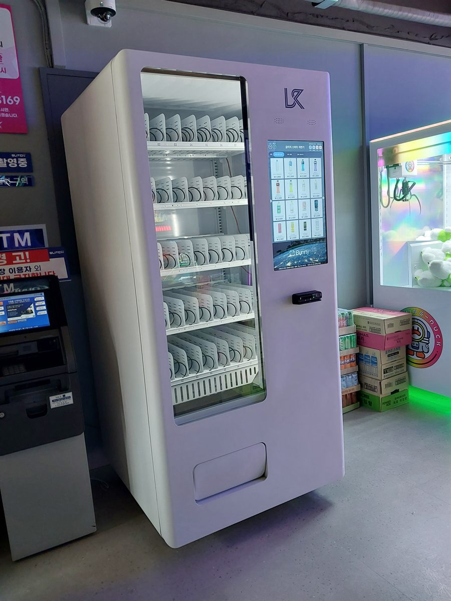

은평구 무인자판기 설치
무인 인형뽑기방 냉장·스낵 스마트 자판기

무인 인형뽑기방은 다른 무인 업종과 손님이 머무는 방식이 다릅니다. 편의점처럼 사서 바로 나가는 곳이 아니라, 한 기계 앞에 붙어 몇 번이고 다시 시도하는 공간입니다. 그래서 체류 시간이 길고, 그 사이 목이 마르거나 입이 심심해지는 순간이 옵니다. 문제는 그때 밖으로 나가면 대개 돌아오지 않는다는 점입니다.
이번 은평구 현장도 사장님이 먼저 그 이야기를 꺼내셨습니다. 음료를 사러 나간 손님이 그대로 귀가하는 일이 잦다는 것이었습니다. 매장은 상주 직원 없이 돌아가고 있었고, 벽면 한쪽에 동전교환기와 ATM이 이미 줄지어 서 있는 구조였습니다.
은평구 무인 인형뽑기방에 맞는 구성
자리는 동전교환기 줄 끝으로 정했습니다. 뽑기 기계 사이는 손님이 집중하는 구역이라 기계를 하나 더 세우면 통로가 좁아지고, 무엇보다 이미 손이 가는 쪽에 붙이는 편이 낫기 때문입니다. 동전을 바꾸러 오는 동선과 음료를 사는 동선이 같은 줄에 모이면 따로 찾아다닐 일이 없습니다.
기종은 냉장칸과 상온 스낵칸을 한 대에 나눠 담은 형태로 넣었습니다. 음료만으로는 부족한데 두 대를 세울 벽면이 남지 않았기 때문입니다. 위쪽 두 층은 탄산·이온음료·생수, 가운데는 젤리와 초콜릿처럼 한 손으로 먹으면서 기계를 조작할 수 있는 간식, 아래쪽은 캔커피와 에너지드링크로 채웠습니다. 현금함은 열지 않았습니다. 동전교환기가 이미 있는 매장이라 수거 지점만 늘어나기 때문입니다.
- 기종 — 냉장 + 상온 스낵 겸용 스마트 자판기 1대, 세로 화면형
- 품목 — 탄산·이온음료·생수 / 젤리·초콜릿·과자 / 캔커피·에너지드링크
- 자리 — 동전교환기·ATM 줄 끝, 입구에서 보이는 벽면
- 결제·관리 — 카드·간편결제 전용, 현금함 없음, 재고·매출 원격 확인
놓고 나서 좋았던 것, 걸렸던 것
좋았던 쪽부터 적겠습니다. 손님이 매장 밖으로 나가는 횟수가 줄었습니다. 음료를 들고 다시 기계 앞에 서는 흐름이 생기면서 체류 시간이 자연스럽게 길어졌습니다. 무인 매장이라 사장님이 상주하지 않는데도 품목이 얼마나 남았는지 휴대전화로 확인되는 점도 컸습니다.
걸렸던 점도 솔직히 적습니다. 첫째, 인형뽑기방은 조명이 어둡고 색이 강합니다. 뽑기 기계의 LED가 사방에서 켜져 있어 자판기 화면이 묻히기 쉽습니다. 이번에는 입구 쪽 벽면이라 괜찮았지만, 안쪽 구역이었다면 자리를 다시 봐야 했습니다. 둘째, 손님 연령대가 낮은 매장은 품목을 좁혀야 합니다. 처음에 넣은 품목 중 일부는 회전이 거의 없어 두 주 만에 뺐습니다. 셋째, 자판기 옆에 휴지통을 같이 두지 않으면 빈 캔이 뽑기 기계 위에 올라갑니다.
은평구, 이런 자리가 잘 맞습니다
은평구는 지하철역을 중심으로 상권이 또렷하게 뭉쳐 있는 편입니다. 연신내 일대는 늦은 시간까지 사람이 다니는 번화가라 무인 매장이 밀집해 있고, 불광동과 대조동은 그 흐름이 이어지는 구역입니다. 응암동과 역촌동, 녹번동은 주택과 상가가 섞인 생활권이라 저녁 시간대에 움직임이 몰리고, 진관동 은평뉴타운 쪽은 아파트 단지 상가 중심이고, 수색동과 증산동은 역세권 소규모 상가가 많습니다.
무인 오락·놀이 업종으로 보면 심야까지 문을 여는 역세권 매장이 가장 잘 맞습니다. 사람이 없는 시간에도 그대로 팔리기 때문입니다. 벽면이 애매한 작은 매장이라면 이번처럼 동전교환기 옆에 줄을 맞춰 붙이면 됩니다.
은평구 서비스 지역
녹번동 · 불광동 · 갈현동 · 구산동 · 대조동 · 응암동 · 역촌동 · 신사동 · 증산동 · 수색동 · 진관동
은평구 전역에서 방문 상담이 가능합니다. 맞닿은 서대문구·마포구와 고양시 덕양구 방면도 같은 담당자가 함께 다닙니다. 지역별 안내는 은평구 무인자판기 설치 안내 페이지에서 보실 수 있습니다.
은평구 무인자판기, 이렇게 시작하시면 됩니다
전화나 상담 신청으로 주소만 남겨 주시면 됩니다. 담당자가 나가서 놓을 자리의 벽면 길이와 천장 높이, 콘센트 위치, 손님 동선을 봅니다. 무인 매장은 여기에 조명 밝기와 CCTV 화각을 한 가지 더 확인합니다. 어두운 자리에서는 화면이 안 보이고, 사각지대에 놓으면 관리가 어렵기 때문입니다. 설치일이 정해지면 끝이며, 설치비는 받지 않습니다. 기계는 구입·렌탈·임대 중에서 고르실 수 있습니다.
무인 매장을 처음 여시는 분이라면 자판기를 나중으로 미루지 마시기를 권해 드립니다. 기계 배치가 다 끝난 뒤에는 남는 자리가 구석뿐인 경우가 많습니다. 설계 단계에서 벽면 한 칸만 비워 두면 동선이 훨씬 깔끔해집니다.
관련 검색어: 은평구무인자판기 · 불광동자판기설치 · 연신내무인자판기 · 응암동자판기 · 은평구인형뽑기방자판기
※ 사진은 픽프리가 시공한 설치 사례이며, 글에 적힌 지역의 현장 사진은 아닙니다.
함께 많이 찾는 키워드
은평구 무인자판기 · 은평구 자판기 설치 · 은평구 자판기 임대 · 은평구 자판기 렌탈 · 서울 무인자판기 · 서울 자판기 설치 · 불광동 자판기 · 응암동 자판기 · 녹번동 자판기 · 갈현동 자판기 · 구산동 자판기 · 대조동 자판기 · 역촌동 자판기 · 진관동 자판기 · 수색동 자판기 · 연신내 자판기 · 인형뽑기방 자판기 · 무인매장 자판기 · 오락실 자판기 · 무인점포 자판기 · 냉장 자판기 · 스낵 자판기 · 스마트 자판기 · 카드 자판기 · 간편결제 자판기 · 무인키오스크 설치 · 자판기 설치비용 · 자판기 원격관리 · 무인창업